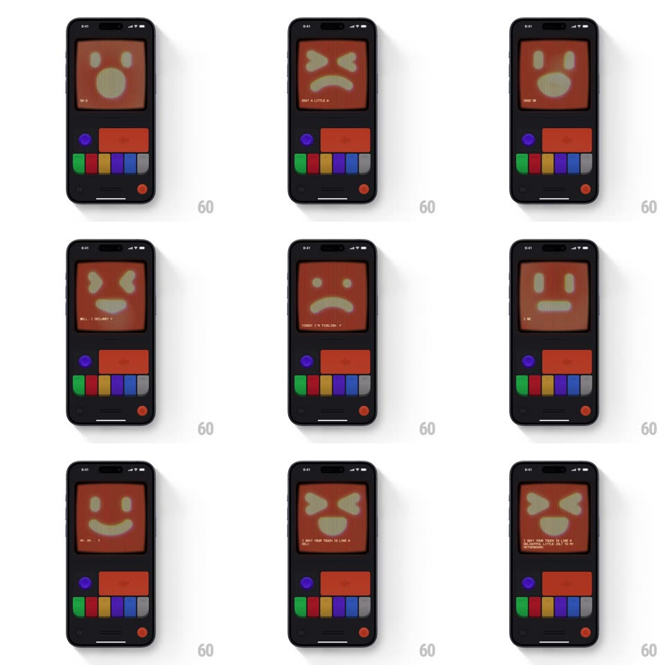

Media
Frame-by-frame

Rebuild this interaction 1:1: Mist's rage tap - repeatedly tapping the red button cycles the CRT mascot through escalating expressions: smile -> surprised "O" -> gritted rage (X-brows, square teeth) -> hurt frown, each landing with a shake, and a typed line reacts to the poking.

Rebuild this interaction 1:1: Mist's rage tap - repeatedly tapping the red button cycles the CRT mascot through escalating expressions: smile -> surprised "O" -> gritted rage (X-brows, square teeth) -> hurt frown, each landing with a shake, and a typed line reacts to the poking. ## Integration Integration: stack-agnostic spec - springs given as stiffness/damping, timed motions as duration + curve; map every value to your framework and animation library of choice. ## Scene Dark console body: CRT screen with the big pixel face in the red/rust palette, control cluster below (purple knob, wide red button, colored pill keys, red power dot). ## Motion spec Pattern: tap-driven expression cycle with shake. - Each tap of the red button: the button depresses (translateY 2px, 80ms, haptic tick) and the face snaps to the next expression with a 2-frame shake (translateX +/-5px, 90ms). - Expression order: neutral smile -> surprised "O" (wide oval mouth, round eyes) -> rage (angled X-brow eyes, gritted square-teeth mouth, face luminance +8%) -> hurt frown (drooped eyes, deep frown) -> back to smile. - Rage state adds a screen-wide tremor for 600ms (translateX/Y jitter +/-3px, 40ms per frame) and a faint red luminance pulse. - Each expression lands with its typed line (30ms/char, monospace): "OH COME", "GRRR", "FORGOT? I'M TICKLISH, YOU KNOW", "I BET YOUR TOUCH IS LIKE A...". - Idle 4s in any state: the face relaxes back to the neutral smile on a 300ms ease. ## Calibration - The shake is exactly 2 frames - snappy, cartoonish, never a long wobble. - Expression changes are one-frame swaps; all the motion lives in the shake and tremor. ## Reduced motion Expressions swap without shake or tremor; text appears whole. ## Don't miss - The rage face's teeth are a single gritted rectangle - pixel-grid dental work, not individual teeth. - The face stays in the red palette in every state - rage reads through shape and tremor, not a color change.